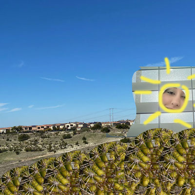

This page is for the photos I've edited using the skills I've learned from J+D Toolkit on February 11th, which are cropping images, changing the resolution of images, changing the width and height of images to certain ratios, and changing the quality of images.


These images show a before and after of an overexposed image.
These images show a before and after of an underexposed image.


This is a banner of a close up image, a wide shot, and a portrait. These images were cropped into squares to fit into the banner.

This is a group photo that was cropped to a 16:9 ratio with the Journalism + Design logo placed over the top.

This image was made using the portrait photo, the overexposed image, and the close up image. I used layering, repetitive copying and pasting of images, the brush tool, and the selection tool. 